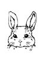
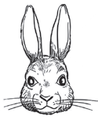
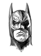

ГЕНЕРАЛЬНЫЙ ПЛАН ВЁРСТКИ
ПЕРВАЯ ФАЗА
Овладеть знаниями и закрепить их в личной или рабочей практике, получив «зачёты» по каждой теме и повысив себе уровень и зарплату.

Умеет верстать. Знает о технологиях, хотя и не применял их. Помимо Мейера, читал Нильсена и Круга. Может рассказать почему начал верс тать. Пробует всё, а не только говорит, что хочет учиться. Гуглит всё. Изобретателен. Сам исправляет свои ошибки. Не упускает замечаний коллег и помогает им. Понимает, что можно лучше и задаётся вопросом о методах проектирования.
Формирует видение профессии, перенимая опыт у старших коллег и профессионалов в области.
Растворившись в сознательном усилии к самообучению, достигает middle-уровня.

Верстает всё, совершенствуя опыт и знания по всем фронтам одновременно. Оттачивает следование принципам проектирования в вёрстке. Не повторяет собственных ошибок. Учится делегировать задачи ученикам. Тренируется не тупить. Умеет оформлять текст и собирать интерфейсы по спецификациям без дизайнера. Договаривается с коллегами, ставит сроки и укладывается в них и берёт обязательства самостоятельно вести небольшие проекты, где нет программирования.
Формирует отношение к работе, через призму качества и профессиональных стремлений
Может оставаться миддлом сколько душе угодно, но не имеет права останавливаться

Продолжает верстать, вопреки соблазнам уйти полностью на программирование фронтенда или в руководящие должности. Подаёт пример, даже когда формально не учит. Работает быстро, но без спешки. Наблюдает за прогрессом учеников, подсказывает нюансы. Оценивает всё бесспристрастно и строго. Следит за архитектурой вёрстки на проекте. Может распределять задачи по фронтенду. Имеет авторитет у программистов и знает тайное рукопожатие дизайнеров.
Отношение к качеству работы у вебмастера приравнивается к отношению к самому себе.
Технические знания, ловкость применения навыков и практические результаты проверяются тимлидом или старшим дизайнером.